Node-JS - Basic
Para que serve ?
No início o javascript era utilizado apenas para rodar em navegadores. Com o passar do tempo o seu poder foi ficando cada vez mais forte devido a diversas tecnologias que foram surgindo em seu universo. Uma dessas tecnologias é o NodeJS. Ele nos permite desenvolver back-end, front-end, micro-services, API'S, tudo isso com o Javascript.
E quais as vantagens de utilizar NODEJS ? Uma das suas maiores vantagens é sua alta velocidade e escalabilidade. Outra grande vantagem que ele utiliza o JS, fazendo com que inciantes não precisem aprender outra linguagem de programação para desenvovler o back-end, e sim podem utilizar o JS, linguagem já utilizada no Front.
Mas, afinal, o que é o NODEJS? É impossível rodar JavaScript sem que tenhamos um ambiente próprio para isso. Por isso surge o Node. Node é um JS Runtime Enviroment, ou seja, é um ambiente que executa o JS em um ambiente completamente exclusivo a ele. Vale ressaltar que o NodeJS não é um framework como o React,Vue,etc.
E como ele funciona? O node funciona com base no Event Loop, ou seja, como o node é single threaded ele não bloqueia nada, trabalha de forma assíncrona, fazendo com que o Node trabalhe de maneira muito mais rápida que o Apache por exemplo.
Depois de já sabermos tudo sobre o que é, agora chegou a hora de instalar, para isso, acesse o seu site NodeJS e realize o download.
Módulos
Node JS é baseado em módulos. Módulos nada mais são do que scripts reaproveitáveis constantemente utilizados em Node. Geralmente os projetos terão diversos módulos instalados. Eles são divididos em três categorias:
- Internos: Módulos que nós desenvolvemos
- Core Modules: Módulos que já vem com o próprio Node
- Externos: módulos de terceiros que instalamos via NPM
Módulo interno
Módulos internos são criados nas pastas do nosso projeto. Para utilizarmos, precisamos exportar o módulo, utilizando a instrução module.exports por exemplo. E também será necessário importa-los onde queiramos utiliza-los, e para isso utilizaremos a instrução require. No exemplo abaixo exportamos uma função (módulo), e utilizamos ela em outro arquivo.
Também podemos importar e exportar de uma forma mais moderna, lançada no ES6. Para isso, precisamos modificar os nossos arquivos para a extensão .mjs. Assim opderemos utilizar o export default e o import.
Core Modules
No Node temos diversos Core Modules, que são os que vem prontos para serem utilizados. Eles resolvem diversos problemas como: trabalhar com arquivos e diretórios, servir aplicações etc. Precisamos imoprtar estes módulos no projeto para que posasmos utilizar.
Por padrão nomeamos a variável com o mesmo nome do módulo importado, para assim facilitar a legibilidade de terceiros.
No node também é possível passarmos argumentos via linha de comando. Passamos eles após a execução do arquivo. Os argumentos ficam em um array chamado: processes.argv, onde podemos fazer loops e resgatar seus valores enviados. Recurso mais utilizado de programador para programador, porém é importante saber de sua utilidade. Por exemplo, ao startarmos o programa, colocando node .\index.js nome=Guilherme, estamos passando o nome via argumento do terminal, na qual podemos pegar dentro do programa :
Módulos Externos
Os módulos externos serão inicializados via NPM. Node Package Manager, como o próprio nome já diz, é o gerenciador de pacotes do node. Para isso, precisamos inicializar o npm no projeto, com o comando: NPM INIT ou NPM INIT - Y. A partir daí os módulos ficam mapeados e podemos instalar novos módulos externos, que serão automaticamente salvos na pasta node_modules. Para instalar qualquer pacote, basta utilizar o comando: npm install nomeDoPacote.
Aqui abaixo, instalaremos o minimist, que é um pacote que nos ajuda a receber os argumentos do tópico acima de uma maneira mais simples. Para isso utilizamos o comando: npm install minimist. E estará pronto para ser utilizado. Com o minimist passamos o parametro da seguinte forma : node index.js --nome=Guilherme
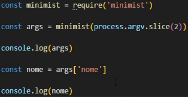Como outro exemplo, utilizaremos um módulo chamado Chalk, que nos permite "colorir" a exibição do Console, nos proporcionando uma melhor visualização em cores do mesmo. Para isso, npm install chalk.
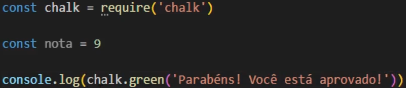Lendo Input Dados
Através de um coreModule do Node (ReadLine), podemos iteragir via terminal com o usuário, realizando perguntas e respostas. O node realiza uma pergunta, o usuário entra com a resposta e assim podemos processar e utilizar a resposta.
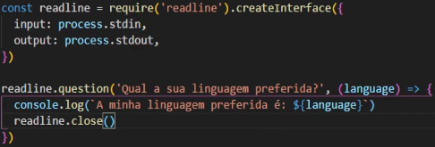Essa forma acima é a forma utilizando o nodejs puro, porém possuimos formas mais simples e digamos que melhores para trabalharmos com inputs, como é o caso do inquirer. O inquirer é um modulo externo (npm), baseado em Promises, o que torna sua utilização mais simples. Dentro dele, as perguntas são alocadas dentro de arrays, e cada pergunta estará dentro de um objeto, que possuirá name e message como atributos.
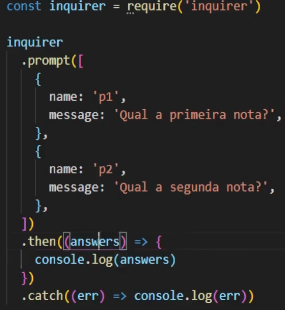Event Emitter
O Event Emitter se comporta como os eventos do navegador estudados em JS DOM. Podemos ativar um trecho de código em alguns opntos da aplicação desejados. É um Core Module chamado Events. Precisamos instanciar a classe EventEmitter que vem dentro do módulo Event e então utilizar os métodos para atingir o objetivo desejado.
No exemplo abaixo, criamos um event emitter mais básico possível, no qual entre antes durante e deopis, o durante será chamado via evento.
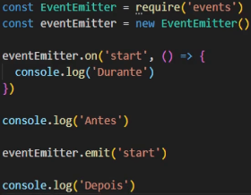Sync e Async
Em node temos duas opções de executar métodos que são conhecidos como sincronos e assíncronos. Síncrono é quando o código acontece linha após linha, esperando, não importa quanto tempo demore. Já a forma assíncrona é quando o código continua progredindo e em algum momento ele nos dará a resposta pendente.
Erros no Node
Temos duas formas principais de lidar com erros no Node, que são gerando ou evidenciando erros. Através do throw, uma forma de encerrar um programa, gerando um novo erro. E também via try/catch, que é uma forma de evidenciar algo que deu errado em um bloco de código e exibir a mensagem de erro para o usuário.
Node Core Modules
Aqui iremos explorar todos os Core Modules que são mais utilizados na vida real dentro do universo Node.
Mesmo que não coloquemos diretamente algum desses módulos em nossa aplicação, provavelmente algum módulo externo estará fazendo uso deles, por isso é de extrema importância saber o que eles fazem, para futuramente entender com clareza o que ocorre por debaixo dos panos. A base e o alicerce são de extrema importância para manusear Node.
- HTTP: Módulo para criar servidores HTTP (acessar aplicação, base do Express)
- Path: Extrair informações de paths(caminhos) de arquivos.
- FS: File System, leitura e escrita de arquivos, diretórios.
- URL: Módulo para trabalhar com URL, endereços, Query Params, Domínio, etc.
Módulo HTTP:
É uma forma de criar um servidor HTTP com um cormodule do node. Basicamente recebemos uma requisição e enviamos código HTML com o resposta, por exemplo.Vamos utilizar alguns métodos como createServer por exemplo, para a criação do servidor. E também o Listen, que irá determinar uma porta para receber essa resposta.
Basicamente quando trabalhamos na web, recebemos uma requisição, e em seguida enviamos uma resposta para ele.
No exemplo abaixo, criaremos um servidor HTTP, sendo ouvido na porta 3000, e colocando esse servidor para ser ouvido, e como callback informando que está tudo ok.
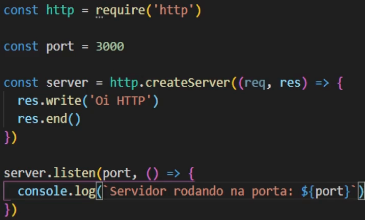Existem alguns serviços do node que ocupam a aba do terminal para continuar rodando, e um desses serviços é o modulo HTTP. Para isso é importante saber que utilizando CTRL + C, ele será interrompido, tombado, finalizado. Isso é útil quando existe algum problema no código também.
Avançando no tópico servidores, começaremos a retornar páginas HTML ao invés de uma simples mensagem como na foto acima. Para isso será necessário implementarmos mais recursos. Podemos adicionar um status code no retorno, com a propriedade statusCode. Mudar os headers para text/html e também retornar o html pelo método end do http.
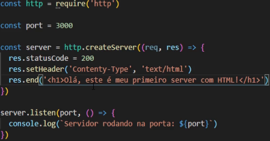Módulo URL
O módulo URL serve para decompor uma url que passamos para o método parse. Podemos resgatar diversas informações como host, path, search, query, etc. A partir dessas informações podemos alterar a lógica do nosso código.
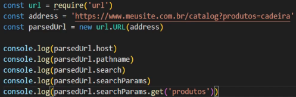Módulo FS
O módulo FS serve para trabalhar com arquivos e diretórios. Através deles podemos ler e escrever em arquivos. Possui uma utilização interessante em log de sistema por exemplo.
Via FS podemos ler arquivos como visto acima(ReadFile), e também escrever em arquivos, (writeFile). Além de escrever em arquivos, também é possível atualizar arquivos, utilizando o (appendFile) Estas escritas pode estar associada a um conjunto de operações, como o envio de informações de um usuário por exemplo.
Com o módulo FS também podemos trabalhar com diretórios(pastas). O método existis pode envidenciar se um diretório existe ou não, e o mkdir pode criar um diretório.
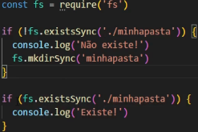Módulo Path
Com o path conseguimos extrair diversas informações sobre caminhos e arquivos. Com eles podemos extrair informações como nomne do diretório, nome do arquivo, extensão do arquivo, etc.
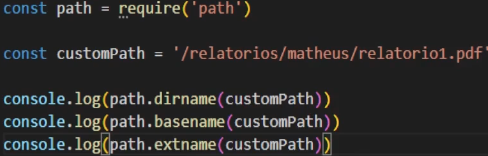Com a função resolve é possível saber qual o path completo até o arquivo alvo. E com a função join, podemos formar um path dinâmico, com variáveis e valores fixos. São duas funções muito importantes no universo Node.
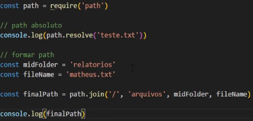Fundamentos do NPM
O que é NPM ?
Quando começamos a utilizar NODE em cenários reais, utilizaremos NPM o tempo inteiro. Ele é o principal gerenciador de pacotes do NodeJS(Também existe o Yarn entre outros, mas o Node é o principal). NPM significa Node Package Manager. A maioria dos projetos que você encontrar em NODE terá a atuação do NPM. Ele nos permite instalar, remover, atualizar, executar scripts entre outros. A criação de um projeto com NPM sempre gera um arquivo chamado PACKAGE.JSON, que será como o "coração" do projeto. Podemos pegasr pacotes NPM de empresas, usuários, podemos inclusive criar um pacote e deixar disponível para todos.
Para um desenvolvedor, voce nao precisa saber tudo sobre o NPM. Na grande verdade, voce utilizará poucos comandos para instalar remover e atualizar dependências. É analogo ao Linux, voce nao precisa saber como funciona o Kernel do Linux milimétricamente para usa-lo.
Para inciar um projeto, podemos utilizar o comando npm init . Seremos questionados para configurar algumas opções iniciais como o nome do projeto, etc. Caso queira pular tudo e aceitar tudo, basta colocar o comando npm init -y . Ao criarmos, instântaneamente será criado um arquivo package.json condensando as informações do projeto.
NPM - Pacotes/Módulos.
Para instalar um pacote vamos utilizar o comando npm install nomeDoProjeto. Quando fazemos desta maneira, a instalação de uma pasta node_modules é criada. Nela todos os arquivos de módulos de terceiros serão armazenados. Sempre que rodamos o comando npm install, a pasta node_modules é recriada com todos os módulos do package.json. Ou seja, no git, nunca sobe a pasta node_modulos, pois ao usarmos o npm install , ele já irá reinstalar denovo.
Todos os módulos existentes no NPM estão catalogados Clicando Aqui.
Como NPM, Node são muito utilizados globalmente, os pacotes são constantementes passados por processo de atualização por seus desenvolvedores. Então, para isso temos o comando npm update que vai fazer a atualização de todos os pacotes instalados no package.json. Porém, em casos específicos iremos atualizar apenas um módulo em específico, e para isso, utilizamos o comando npm update nomeDoPacote. E quando saber quando tem atualização disponível? npx npm-check-updates -u
Dependências de Desenvolvedor
Há uma possibilidade de instalar pacotes apenas para o ambiente de desenvolvimento. Eles ficarão separados do packaged.json. Ou seja, na build de produção esses módulos não serão instalados. Um exemplo: Servidor para ambiente local, como o Nodemon. Para essa instalação utilizamos o comando npm install --save-dev chalk.
Scripts de NPM.
É possível criar rotinas com o npm, ou seja, executamos uma série de comandos com apenas um. Utilizamos o comando npm run script onde script é o nome da sequência de comandos que configuramos no package.Json . Exemplo comum, é configurar o start, para rodarmos o projeto com npm start.
Pacote Global
Um pacote global não fica salvo na pasta node_modules do projeto, ele fica salvo no computador do usuário. A vantagem é que podemos acessá-los em qualquer local via terminal. Utilizamos o comando: npm install -g loadash .
Executando e Removendo Pacotes
Alguns pacotes são scripts executaveis que resultam em alguma ação no nosso computador. Como por exemplo a isntalação do React, é feita pelo npx. Desta maneira uma série de processos são simplificados por este executor.
Já para removermos um pacote utilizado, basta colocar o comando npm unistall nomeDoPacote. Isso faz com que o pacote seja removido do package.json também.